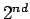

Next: About this document ...
Up: Decomposition of analytic measures
Previous: Generalized F. and M.
-
- 1
- N. Asmar and S. Montgomery-Smith,
Hahn's embedding theorem for orders
and harmonic analysis on groups with ordered duals, Colloq. Math. 70 (1996), 235-252.
- 2
- N. Asmar and S. Montgomery-Smith,
Analytic measures and Bochner measurability,
Bull. Sci. Math. 122 (1998), 39-66.
- 3
- N. Asmar and S. Montgomery-Smith,
Hardy martingales and Jensen's Inequality, Bull. Austral. Math. Soc. 55 (1997), 185-195.
- 4
- N. Asmar, S. Montgomery-Smith, and S. Saeki,
Transference in spaces of measures,
J. Functional Analysis, 165 (1999), 1-23.
- 5
- C. Bessaga and A. Pe
 czynski,
On bases and unconditional convergence of series in Banach spaces,
Studia Math. 17 (1958), 151-164.
czynski,
On bases and unconditional convergence of series in Banach spaces,
Studia Math. 17 (1958), 151-164.
- 6
- S. Bochner,
Boundary values of analytic functions in
several variables and almost periodic functions,
Ann. of Math., 45 (1944), 708-722.
- 7
- D. L. Burkholder,
A geometrical characterization of Banach
spaces in which martingale difference sequences are unconditional,
Ann. Math. Statist., 37 (1966), 1494-1504.
- 8
- D. L. Burkholder,
Martingale transforms,
The Annals of Probability, 9 (1981), 997-1011.
- 9
- K. De Leeuw and I. Glicksberg,
Quasi-invariance and measures on compact groups,
Acta Math., 109 (1963), 179-205.
- 10
- J. L. Doob,
``Stochastic Processes'', Wiley Publications in Statistics, New York 1953.
- 11
- R. E. Edwards, and G. I. Gaudry,
``Littlewood-Paley and Multiplier Theory'',
Ergebnisse der Mathematik
und ihrer Grenzgebiete, Springer-Verlag, No. 90,
Berlin, 1977.
- 12
- F. Forelli,
Analytic and quasi-invariant measures,
Acta Math., 118 (1967), 33-59.
- 13
- L. Fuchs,
`` Partially ordered algebraic systems'',
Pergamon Press, Oxford, New York, 1960.
- 14
- D. J. H. Garling,
On martingales with values in a complex Banach space,
Math. Proc. Camb. Phil. Soc. 104 (1988), 399-406.
- 15
- D. J. H. Garling,
Hardy martingales and the unconditional convergence of martingales,
Bull. London Math. Soc. 23 (1991), 190-192.
- 16
- H. Helson and D. Lowdenslager,
Prediction theory and Fourier series in several variables,
Acta Math. 99 (1958), 165-202.
- 17
- H. Helson and D. Lowdenslager,
Prediction theory and Fourier series in several variables II,
Acta Math. 106 (1961), 175-212.
- 18
- E. Hewitt and S. Koshi,
Orderings in locally compact Abelian groups
and the theorem of F. and M. Riesz,
Math. Proc. Camb. Phil. Soc. 93 (1983), 441-457.
- 19
- E. Hewitt, S. Koshi, and Y. Takahashi,
The F. and M. Riesz Theorem revisited,
Math. Scandinav., 60 (1987), 63-76.
- 20
- E. Hewitt and K. A. Ross,
``Abstract Harmonic Analysis I,''  Edition, Grundlehren der
Math. Wissenschaften, Band 115, Springer-Verlag, Berlin 1979.
- 21
- E. Hewitt and K. A. Ross,
``Abstract Harmonic Analysis II,'' Grundlehren der
Math. Wissenschaften in Einzeldarstellungen, Band
152, Springer-Verlag, New York, 1970.
- 22
- W. Rudin,
``Fourier Analysis on Groups,''
Interscience Tracts in Pure and Applied Mathematics,
No. 12, John Wiely, New York, 1962.
- 23
- H. Yamaguchi,
A property of some Fourier-Stieltjes transforms,
Pac. J. Math. 108 (1983), 243-256.
Stephen Montgomery-Smith
2002-10-30